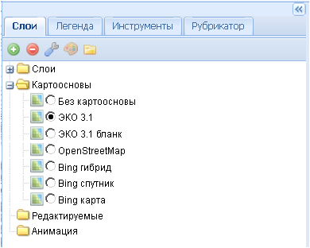

Папка Картоосновы
В папке содержатся список доступных базовых картографических основ, на которые накладываются пользовательские тематические слои. В рабочем окне карты одномоментно может отображаться только одна картооснова. Картографические основы не подлежат изменению пользователем, и по объектам картоосновы не предоставляются данные с помощью инструмента информация (см. Кнопки управления).
В папке по умолчанию активирована картографическая основа ЭКО 3.1, созданная специально для ЭСИМО. Пользователь в зависимости от своих задач может сменить картографическую основу для своего проекта, выбрав необходимую из заданного списка. Кроме ЭКО 3.1 имеется ее бланковый вариант ЭКО 3.1 бланк, представляющий, по сути, контурную карту, четыре варианта карт Google и картооснова OpenStreetMap. Возможно также загружать тематические слои без какой-либо картографической основы.
